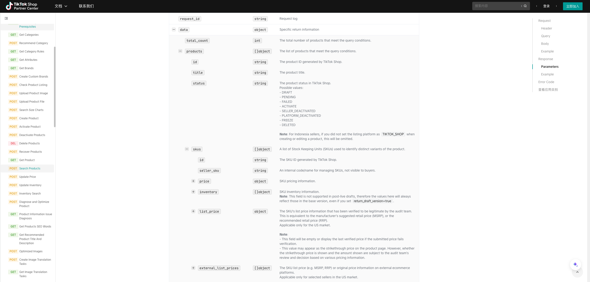
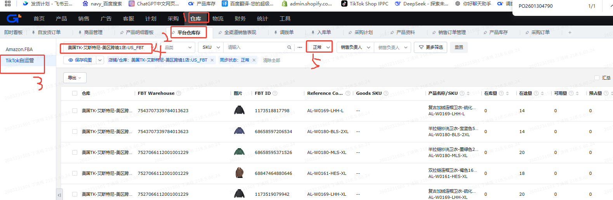
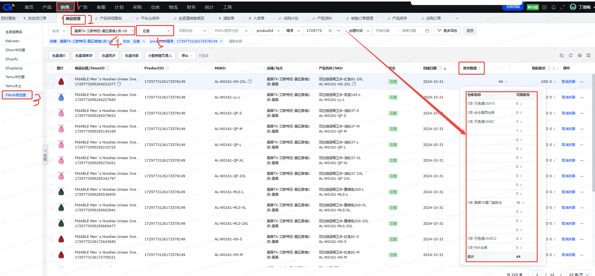
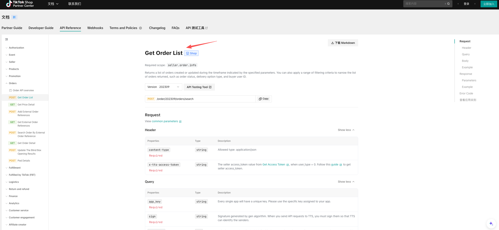

发补货看板业务计算逻辑说明
一、卡片展示字段计算逻辑
本节按页面统计卡片顺序说明。输出字段已合并到“表计算逻辑说明”中。
| 序号 | 卡片名称 | 业务说明 | 业务逻辑说明 | 表计算逻辑说明 |
|---|---|---|---|---|
| 1 | 在售 SKU 总数 | 当前可纳入发补货看板的 SKU 规模。 | 从库存底座中取在售 SKU，按 SKU 去重键计数； 去重键优先 MSKU，其次库存 SKU，最后 SKU ID。 | 输出字段：onSaleSkuCount。表计算口径：从库存底座中取在售 SKU，按 SKU 去重键计数； 去重键优先 MSKU，其次库存 SKU，最后 SKU ID。 |
| 2 | 需发货 SKU 数 | 本次需要进入发货动作的 SKU 数。 | 从发货模型中取“是否发货 = 是”的 SKU，按同一 SKU 去重键计数，并且只统计库存底座存在的 SKU。 | 输出字段：needShipSkuCount。表计算口径：从发货模型中取“是否发货 = 是”的 SKU，按同一 SKU 去重键计数，并且只统计库存底座存在的 SKU。 |
| 3 | 需采购 SKU 数 | 本次需要进入采购动作的 SKU 数。 | 从备货模型中取“是否采购 = 是”的 SKU，按同一 SKU 去重键计数，并且只统计库存底座存在的 SKU。 | 输出字段：needPurchaseSkuCount。表计算口径：从备货模型中取“是否采购 = 是”的 SKU，按同一 SKU 去重键计数，并且只统计库存底座存在的 SKU。 |
| 4 | 海外在库总量 | 当前海外侧可售或在库库存水位。 | 复用库存检查汇总中的“SKU + 全部”海外在库总库存。 | 输出字段：overseasStockQty。表计算口径：复用库存检查汇总中的“SKU + 全部”海外在库总库存。 |
| 5 | 国内在库总量 | 后续可发货的国内库存基础。 | 复用库存检查汇总中的“SKU + 全部”国内在库库存。 | 输出字段：domesticStockQty。表计算口径：复用库存检查汇总中的“SKU + 全部”国内在库库存。 |
| 6 | 下次截单日 | 用于判断是否赶本次发货截单。 | 优先取发货模型中所有 SKU 的最近截单日最小值； 如果没有，则取规则配置中的默认最近截单日。 | 输出字段：nextCutoffDate。表计算口径：优先取发货模型中所有 SKU 的最近截单日最小值； 如果没有，则取规则配置中的默认最近截单日。 |
| 7 | 海外低可售天数 SKU 数 | 用于定位海外库存低水位风险。 | 按 SKU 去重后，统计告警类型为严重缺货、正常缺货、分布不均、直邮撑不住的 SKU 数。 | 输出字段：overseasLowDaysSkuCount。表计算口径：按 SKU 去重后，统计告警类型为严重缺货、正常缺货、分布不均、直邮撑不住的 SKU 数。 |
| 8 | 国内缺货 SKU 数 | 国内也没有可发库存，需要优先处理。 | 按 SKU 去重后，统计告警类型为严重缺货的 SKU 数。 | 输出字段：domesticShortageSkuCount。表计算口径：按 SKU 去重后，统计告警类型为严重缺货的 SKU 数。 |
二、SKU 列表字段计算逻辑
本节按库存看板 SKU 列表字段顺序说明。表来源：ads.ads_inventory_replenishment_inventory_sku_1d；
默认按业务日期、站点、店铺等页面筛选条件取数。输出字段已合并到“表计算逻辑说明”中。
| 序号 | 字段分组 | 列表字段名 | 业务说明 | 业务逻辑说明 | 表计算逻辑说明 |
|---|---|---|---|---|---|
| 1 | 商品基础信息 | 站点 | 用于站点筛选和分组。 | 根据店铺归属识别站点，作为页面筛选、汇总和后续库存口径区分的第一层条件。 | 输出字段：siteCode。表计算口径：ADS 字段 site_code，来自发补货库存 SKU 查询表。 |
| 2 | 商品基础信息 | 店铺 | 用于店铺筛选和分组。 | 取商品或店铺配置中的店铺名称，用于区分同一 SKU 在不同店铺下的库存与发补货判断。 | 输出字段：storeName。表计算口径：ADS 字段 store_name，来自发补货库存 SKU 查询表。 |
| 3 | 商品基础信息 | SPU编码 | 用于 SPU 维度聚合和搜索。 | 优先取商品档案维护的 SPU，其次按库存 SKU / 商品信息匹配到款式编码。 | 输出字段：spu。表计算口径：ADS 字段 spu，底层由商品基础信息与商品档案映射后输出。 |
| 4 | 商品基础信息 | SPU名称 | 辅助识别商品。 | 取 SPU 对应的中文名称，帮助业务按款式识别商品，不参与库存加减。 | 输出字段：spuName。表计算口径：ADS 字段 spu_name，底层由商品基础信息与商品档案映射后输出。 |
| 5 | 商品基础信息 | PID | 用于定位具体 TikTok 商品。 | 取 TikTok 商品 ID，用于定位店铺后台的具体商品。同一库存 SKU 可能挂载多个 PID。 | 输出字段：pid。表计算口径：ADS 字段 pid，来自发补货商品 SKU 底座。 |
| 6 | 商品基础信息 | MSKU | 用于和库存 SKU / ERP SKU 对齐。 | 取积加或商品侧维护的 MSKU，通常用于和平台 SKU 编码、ERP SKU 做识别对齐。 | 输出字段：msku。表计算口径：ADS 字段 msku，来自发补货商品 SKU 底座。 |
| 7 | 商品基础信息 | SKU ID | 用于平台 SKU 定位。 | 取 TikTok 官方 SKU ID，用于和官方商品 SKU 明细对齐。 | 输出字段：skuId。表计算口径：ADS 字段 sku_id，来自发补货商品 SKU 底座。 |
| 8 | 商品基础信息 | 库存SKU | 同一库存 SKU 可能挂多个 PID。 | 库存共享与发补货计算的主要识别对象，后续 SPU 汇总需要先按库存 SKU 去重。 | 输出字段：inventorySku。表计算口径：ADS 字段 inventory_sku，作为库存 SKU 粒度查询表的核心键。 |
| 9 | 商品基础信息 | SKU名称 | 辅助识别库存 SKU。 | 取库存 SKU 对应的商品名称或中文名称，用于业务识别商品，不参与库存计算。 | 输出字段：inventorySkuName。表计算口径：ADS 字段 inventory_sku_name，来自发补货商品 SKU 底座。 |
| 10 | 汇总库存 | 总库存 | SKU 当前总库存水位。 | 总国内库存（序号13） + 海外在途总量（序号18） + 海外在库总库存（序号26）。 | 输出字段：totalInventoryQty。表计算口径：ADS 字段 total_inventory_qty，由 DWS 库存看板 SKU 宽表透传。 |
| 11 | 汇总库存 | 总在途库存 | 尚未成为可用库存的补给量。 | 总国内库存（序号13） - 国内在库（序号17） + 海外在途总量（序号18）。 | 输出字段：totalInTransitQty。表计算口径：ADS 字段 total_in_transit_qty，由 DWS 库存看板 SKU 宽表透传。 |
| 12 | 汇总库存 | 总可用库存 | 当前可用于销售或调拨的库存。 | 国内在库（序号17） + 海外在库总库存（序号26）。 | 输出字段：totalAvailableQty。表计算口径：ADS 字段 total_available_qty，由 DWS 库存看板 SKU 宽表透传。 |
| 13 | 汇总库存 | 总国内库存 | 发货模型判断国内是否能补海外的基础。 | 工厂采购未交量（序号15） + 国内交货在途库存（序号16） + 国内在库（序号17）。 | 输出字段：domesticTotalQty。表计算口径：ADS 字段 domestic_total_qty，由 DWS 库存看板 SKU 宽表透传。 |
| 14 | A.国内库存 | 采购在途库存 | 未来国内侧补充量。 | （数据源2）工厂采购未交量（序号15） + 国内交货在途库存（序号16）； 表示已经在采购 / 交付流程中、但还没有成为国内在库的补给量。 | 输出字段：purchaseInTransitQty。表计算口径：ADS 字段 purchase_in_transit_qty，由 DWS 库存看板 SKU 宽表透传。 |
| 15 | A.国内库存 | 工厂采购未交量 | 采购未履约风险。 | （数据源2）美国TK-厦门直邮仓、美国TK-国内厦门仓、美国TK-英区直邮仓的采购未交量汇总； 表示供应端已采购但工厂还未交付的数量。 | 输出字段：factoryUnfulfilledQty。表计算口径：ADS 字段 factory_unfulfilled_qty，由 DWS 库存看板 SKU 宽表透传。 |
| 16 | A.国内库存 | 国内交货在途库存 | 即将变成国内在库的数量。 | （数据源2）美国TK-厦门直邮仓、美国TK-国内厦门仓、美国TK-英区直邮仓的国内交货在途库存汇总； 表示国内交付或调拨过程中、还未完成入库的库存。 | 输出字段：domesticDeliveryInTransitQty。表计算口径：ADS 字段 domestic_delivery_in_transit_qty，由 DWS 库存看板 SKU 宽表透传。 |
| 17 | A.国内库存 | 国内在库 | 发货模型计算国内可发库存的核心字段。 | （数据源2）美国TK-厦门直邮仓、美国TK-国内厦门仓、美国TK-英区直邮仓的可用库存汇总； 表示国内仓当前已经在库、可用于直邮预留或发往海外的库存。 | 输出字段：domesticOnHandQty。表计算口径：ADS 字段 domestic_on_hand_qty，由 DWS 库存看板 SKU 宽表透传。 |
| 18 | B.海外在途库存 | 海外在途总量 | 即将补充海外库存的数量。 | 三方仓在途量（序号19） + FBT在途量（序号24） + 英国退货仓在途量（序号25）； 表示海外方向还没有入可售仓的全部补给量。 | 输出字段：overseasInTransitTotalQty。表计算口径：ADS 字段 overseas_in_transit_total_qty，由 DWS 库存看板 SKU 宽表透传。 |
| 19 | B.海外在途库存 | 三方仓在途量 | 三方仓补给。 | 万邑通USKY3在途（序号20） + 万邑通USWC2在途（序号21） + 万邑通USWC在途（序号22） + 美国谷仓:美西仓库在途（序号23）； 表示三方海外仓路上的补给量，不包含 FBT 在途和英国退货仓在途。 | 输出字段：thirdWarehouseInTransitQty。表计算口径：ADS 字段 third_warehouse_in_transit_qty，由 DWS 库存看板 SKU 宽表透传。 |
| 20 | B.海外在途库存 | 万邑通USKY3在途 | USKY3 仓补给。 | （数据源2）万邑通 USKY3 仓的出库待处理、发货待处理和在途库存合计。 | 输出字段：winitUsky3InTransitQty。表计算口径：ADS 字段 winit_usky3_in_transit_qty，由 DWS 库存看板 SKU 宽表透传。 |
| 21 | B.海外在途库存 | 万邑通USWC2在途 | USWC2 仓补给。 | （数据源2）万邑通 USWC2 仓的出库待处理、发货待处理和在途库存合计。 | 输出字段：winitUswc2InTransitQty。表计算口径：ADS 字段 winit_uswc2_in_transit_qty，由 DWS 库存看板 SKU 宽表透传。 |
| 22 | B.海外在途库存 | 万邑通USWC在途 | USWC 仓补给。 | （数据源2）万邑通 USWC 仓的出库待处理、发货待处理和在途库存合计。 | 输出字段：winitUswcInTransitQty。表计算口径：ADS 字段 winit_uswc_in_transit_qty，由 DWS 库存看板 SKU 宽表透传。 |
| 23 | B.海外在途库存 | 美国谷仓:美西仓库在途 | 谷仓美西补给。 | （数据源2）美国谷仓:美西仓库的出库待处理、发货待处理和在途库存合计。 | 输出字段：goodcangUsWestInTransitQty。表计算口径：ADS 字段 goodcang_us_west_in_transit_qty，由 DWS 库存看板 SKU 宽表透传。 |
| 24 | B.海外在途库存 | FBT在途量 | FBT 补给。 | （数据源3）TikTok FBT 平台仓同步状态正常的在途库存。 | 输出字段：fbtInTransitQty。表计算口径：ADS 字段 fbt_in_transit_qty，由 DWS 库存看板 SKU 宽表透传。 |
| 25 | B.海外在途库存 | 英国退货仓在途量 | 英国退货仓补给。 | （数据源2）万邑通 UKTW 仓、英国退件仓的出库待处理、发货待处理和在途库存合计。 | 输出字段：ukReturnInTransitQty。表计算口径：ADS 字段 uk_return_in_transit_qty，由 DWS 库存看板 SKU 宽表透传。 |
| 26 | C.海外在库库存 | 海外在库总库存 | 海外当前库存水位。 | 积加-万邑通USKY3（序号27） + 积加-万邑通USWC2（序号28） + 积加-万邑通USWC（序号29） + 积加-谷仓美西仓库（序号30） + FBT可用（序号31） + 积加-FBA仓库（序号32） + 积加-英国退货仓（序号33）； 表示海外仓当前已经在库或可用于销售的库存水位。 | 输出字段：overseasOnHandTotalQty。表计算口径：ADS 字段 overseas_on_hand_total_qty，由 DWS 库存看板 SKU 宽表透传。 |
| 27 | C.海外在库库存 | 积加-万邑通USKY3 | USKY3 当前可用库存。 | （数据源2）积加侧万邑通 USKY3 仓可用库存。 | 输出字段：jijiaWinitUsky3AvailableQty。表计算口径：ADS 字段 jijia_winit_usky3_available_qty，由 DWS 库存看板 SKU 宽表透传。 |
| 28 | C.海外在库库存 | 积加-万邑通USWC2 | USWC2 当前可用库存。 | （数据源2）积加侧万邑通 USWC2 仓可用库存。 | 输出字段：jijiaWinitUswc2AvailableQty。表计算口径：ADS 字段 jijia_winit_uswc2_available_qty，由 DWS 库存看板 SKU 宽表透传。 |
| 29 | C.海外在库库存 | 积加-万邑通USWC | USWC 当前可用库存。 | （数据源2）积加侧万邑通 USWC 仓可用库存。 | 输出字段：jijiaWinitUswcAvailableQty。表计算口径：ADS 字段 jijia_winit_uswc_available_qty，由 DWS 库存看板 SKU 宽表透传。 |
| 30 | C.海外在库库存 | 积加-谷仓美西仓库 | 谷仓美西当前可用库存。 | （数据源2）积加侧谷仓美西仓可用库存。 | 输出字段：jijiaGoodcangUsWestAvailableQty。表计算口径：ADS 字段 jijia_goodcang_us_west_available_qty，由 DWS 库存看板 SKU 宽表透传。 |
| 31 | C.海外在库库存 | FBT可用 | FBT 当前可用库存。 | （数据源3）TikTok FBT 平台仓同步状态正常的可用库存。 | 输出字段：fbtAvailableQty。表计算口径：ADS 字段 fbt_available_qty，由 DWS 库存看板 SKU 宽表透传。 |
| 32 | C.海外在库库存 | 积加-FBA仓库 | FBA 当前可用库存。 | （数据源2）积加侧 FBA 仓可用库存。 | 输出字段：jijiaFbaAvailableQty。表计算口径：ADS 字段 jijia_fba_available_qty，由 DWS 库存看板 SKU 宽表透传。 |
| 33 | C.海外在库库存 | 积加-英国退货仓 | 英国退货仓当前库存。 | （数据源2）积加侧万邑通 UKTW 仓、英国退件仓可用库存汇总。 | 输出字段：jijiaUkReturnAvailableQty。表计算口径：ADS 字段 jijia_uk_return_available_qty，由 DWS 库存看板 SKU 宽表透传。 |
| 34 | C.海外在库库存 | 三方仓可用量 | 三方仓当前可用库存。 | 积加-万邑通USKY3（序号27） + 积加-万邑通USWC2（序号28） + 积加-万邑通USWC（序号29） + 积加-谷仓美西仓库（序号30）； 表示三方海外仓当前可用库存，不包含 FBT、FBA 和英国退货仓。 | 输出字段：thirdWarehouseAvailableQty。表计算口径：ADS 字段 third_warehouse_available_qty，由 DWS 库存看板 SKU 宽表透传。 |
三、备货模型（SKU）列表字段计算逻辑
本节按页面列表字段顺序说明。输出字段已合并到“表计算逻辑说明”中。
| 序号 | 字段分组 | 列表字段名 | 业务说明 | 业务逻辑说明 | 表计算逻辑说明 |
|---|---|---|---|---|---|
| 1 | 商品基础信息 | 站点、店铺、SPU编码、SPU名称、PID、MSKU、SKU ID、库存SKU、SKU名称 | 用于定位采购对象。 | 直接透传商品基础信息和库存 SKU 信息。 | 输出字段：siteCode/storeName/spu/spuName/pid/msku/skuId/inventorySku/inventorySkuName。表计算口径：直接透传商品基础信息和库存 SKU 信息。 |
| 2 | 动态加权日均 | 7天日均（S7） | 反映最近短期销量。 | 取近 7 天日均销量。 | 输出字段：dailySalesQty7d。表计算口径：取近 7 天日均销量。 |
| 3 | 动态加权日均 | 30天日均（S30） | 反映相对稳定销量。 | 取近 30 天日均销量。 | 输出字段：dailySalesQty30d。表计算口径：取近 30 天日均销量。 |
| 4 | 动态加权日均 | S7/S30比值 | 判断近期销量相对 30 天均值的趋势。 | 先过滤 S7：S30 小于等于 0 时取 S7； S7 大于 S30 两倍时取 S30； 其他取 S7。再用过滤后 S7 / S30，S30 为 0 时为 0。 | 输出字段：s7S30Ratio。表计算口径：先过滤 S7：S30 小于等于 0 时取 S7； S7 大于 S30 两倍时取 S30； 其他取 S7。再用过滤后 S7 / S30，S30 为 0 时为 0。 |
| 5 | 动态加权日均 | 动态权重档位 | 决定加权日均更偏近期还是长期。 | S30 小于等于 0 为无销量档； S7/S30 大于等于 1.3 为上涨档； 小于 0.8 为下滑档； 其他为平稳档。 | 输出字段：dynamicWeightLevel。表计算口径：S30 小于等于 0 为无销量档； S7/S30 大于等于 1.3 为上涨档； 小于 0.8 为下滑档； 其他为平稳档。 |
| 6 | 动态加权日均 | 加权日均 | 采购和发货模型最核心的销量预测值。 | 无销量档取过滤后 S7； 上涨档 = 过滤后 S7×0.75 + S30×0.25； 平稳档 = 过滤后 S7×0.60 + S30×0.40； 下滑档 = 过滤后 S7×0.40 + S30×0.60。 | 输出字段：weightedDailySalesQty。表计算口径：无销量档取过滤后 S7； 上涨档 = 过滤后 S7×0.75 + S30×0.25； 平稳档 = 过滤后 S7×0.60 + S30×0.40； 下滑档 = 过滤后 S7×0.40 + S30×0.60。 |
| 7 | 动态加权日均 | 预计断货日期 | 预计当前店铺同步库存还能撑到哪天。 | 业务日期 + FLOOR(店铺侧被同步总库存 / 加权日均)； 加权日均小于等于 0 时为空。 | 输出字段：estimatedOutOfStockDate。表计算口径：业务日期 + FLOOR(店铺侧被同步总库存 / 加权日均)； 加权日均小于等于 0 时为空。 |
| 8 | 生命周期判断 | 生命周期 | 用于调整备货策略。 | 优先取人工配置； 未配置时按 S7/S30 档位兜底为上升期、平稳期或下降期。 | 输出字段：lifeCycle。表计算口径：优先取人工配置； 未配置时按 S7/S30 档位兜底为上升期、平稳期或下降期。 |
| 9 | 生命周期判断 | 是否内容爆发 | 内容爆发商品通常需要关注备货。 | 取人工维护配置中的内容爆发标记。 | 输出字段：isContentBurst。表计算口径：取人工维护配置中的内容爆发标记。 |
| 10 | 生命周期判断 | 商务出单占比 | 辅助判断订单来源结构。 | 取人工维护配置中的商务出单占比。 | 输出字段：businessOrderRatio。表计算口径：取人工维护配置中的商务出单占比。 |
| 11 | 生命周期判断 | 剪辑出单占比 | 辅助判断订单来源结构。 | 取人工维护配置中的剪辑出单占比。 | 输出字段：editorOrderRatio。表计算口径：取人工维护配置中的剪辑出单占比。 |
| 12 | 生命周期判断 | 安全库存调整天数（海外仓） | 影响海外目标库存。 | 基础海外安全库存天数 + 生命周期对应调整天数，按向下取整输出。 | 输出字段：overseasSafetyStockAdjustDays。表计算口径：基础海外安全库存天数 + 生命周期对应调整天数，按向下取整输出。 |
| 13 | 生命周期判断 | 安全库存调整天数（直邮仓） | 影响直邮目标库存。 | 基础直邮安全库存天数 + 生命周期对应调整天数，按向下取整输出。 | 输出字段：directMailSafetyStockAdjustDays。表计算口径：基础直邮安全库存天数 + 生命周期对应调整天数，按向下取整输出。 |
| 14 | SKU四层分层 | SKU分层 | A 层为重点热卖 SKU，D 层为风险 SKU。 | VOC 大于等于 2 为 D； 非 D 且累计销售贡献小于等于 60% 且趋势为上涨/平稳为 A； 非 D 且累计贡献小于等于 90% 且有销量为 B； 其他为 C。 | 输出字段：skuTier。表计算口径：VOC 大于等于 2 为 D； 非 D 且累计销售贡献小于等于 60% 且趋势为上涨/平稳为 A； 非 D 且累计贡献小于等于 90% 且有销量为 B； 其他为 C。 |
| 15 | SKU四层分层 | 是否热卖色码 | 用于识别重点色码。 | SKU 分层为 A 时为是，否则为否。 | 输出字段：isHotColorSize。表计算口径：SKU 分层为 A 时为是，否则为否。 |
| 16 | SKU四层分层 | VOC值 | VOC 风险会影响 SKU 分层。 | 取人工维护配置中的 VOC 值，缺失按 0。 | 输出字段：vocScore。表计算口径：取人工维护配置中的 VOC 值，缺失按 0。 |
| 17 | SKU四层分层 | 退货率（近14天） | 用于识别近期售后风险。 | 近 14 天已取消订单件数 / 近 14 天总销售件数； 分母为 0 时为 0。 | 输出字段：returnRate14d。表计算口径：近 14 天已取消订单件数 / 近 14 天总销售件数； 分母为 0 时为 0。 |
| 18 | SKU四层分层 | 建议运输方式（补货） | 辅助选择补货方式。 | 按规则参数和生命周期 / 安全库存策略输出补货运输建议。 | 输出字段：suggestRestockTransportMode。表计算口径：按规则参数和生命周期 / 安全库存策略输出补货运输建议。 |
| 19 | 目标库存计算 | 目标库存（海外仓） | 海外仓建议保持的目标库存。 | CEIL(加权日均 × (海运总天数 + 海外安全库存天数))。 | 输出字段：targetOverseasStockQty。表计算口径：CEIL(加权日均 × (海运总天数 + 海外安全库存天数))。 |
| 20 | 目标库存计算 | 目标库存（直邮仓） | 直邮仓建议保持的目标库存。 | CEIL(加权日均 × (直邮总天数 + 直邮安全库存天数))。 | 输出字段：targetDirectMailStockQty。表计算口径：CEIL(加权日均 × (直邮总天数 + 直邮安全库存天数))。 |
| 21 | 目标库存计算 | 安全库存天数（最终） | 解释目标库存高低的核心天数。 | 根据生命周期、内容爆发、规则参数等得到最终安全库存天数，并向上取整。 | 输出字段：finalSafetyStockDays。表计算口径：根据生命周期、内容爆发、规则参数等得到最终安全库存天数，并向上取整。 |
| 22 | 补货决策输出 | 是否采购 | 采购动作判断。 | 当前总库存低于目标库存，且生命周期不是下降期、SKU 分层不是 D 时为是； 否则为否。 | 输出字段：isPurchase。表计算口径：当前总库存低于目标库存，且生命周期不是下降期、SKU 分层不是 D 时为是； 否则为否。 |
| 23 | 补货决策输出 | 建议采购数量 | 建议采购执行数量。 | CEIL(MAX(目标直邮库存 - 当前总库存, 0))。 | 输出字段：suggestPurchaseQty。表计算口径：CEIL(MAX(目标直邮库存 - 当前总库存, 0))。 |
| 24 | 补货决策输出 | 采购后SKU预计总库存 | 采购后预计库存水位。 | 当前总库存 + 建议采购数量。 | 输出字段：postPurchaseTotalInventoryQty。表计算口径：当前总库存 + 建议采购数量。 |
| 25 | 补货决策输出 | 建议运输方式（采购） | 采购物流建议。 | 若库存可售天数低于最终安全库存天数的一半，倾向空派加急； 否则按规则输出常规采购运输方式。 | 输出字段：suggestPurchaseTransportMode。表计算口径：若库存可售天数低于最终安全库存天数的一半，倾向空派加急； 否则按规则输出常规采购运输方式。 |
| 26 | 补货决策输出 | 预计到仓日（采购） | 预计采购补货可用日期。 | 基于业务日期和采购运输方式对应 ETA 推算。 | 输出字段：purchaseEtaDate。表计算口径：基于业务日期和采购运输方式对应 ETA 推算。 |
| 27 | 操作 | 操作 | 用于页面编辑、查看或导出动作。 | 前端操作列，不参与数仓计算。 | 输出字段：action。表计算口径：前端操作列，不参与数仓计算。 |
SPU 备货特别说明：
SPU 下同一个库存 SKU 只能算一条。日均类指标不是简单把 SKU 加权日均相加，而是先汇总 S7、S30，再重新计算 S7/S30、动态档位和 SPU 加权日均。
四、备货模型（SPU）列表字段计算逻辑
本节按页面列表字段顺序说明。输出字段已合并到“表计算逻辑说明”中。
| 序号 | 字段分组 | 列表字段名 | 业务说明 | 业务逻辑说明 | 表计算逻辑说明 |
|---|---|---|---|---|---|
| 1 | 商品基础信息 | 站点、店铺、SPU编码、SPU名称 | SPU 级展示对象。 | 直接透传 SPU 基础信息。 | 输出字段：siteCode/storeName/spu/spuName。表计算口径：直接透传 SPU 基础信息。 |
| 2 | 销量与加权 | 7天日均（S7） | SPU 近期日均销量。 | 同一站点 + 店铺 + SPU 下，按库存 SKU 去重后汇总 SKU 的 S7。 | 输出字段：dailySalesQty7d。表计算口径：同一站点 + 店铺 + SPU 下，按库存 SKU 去重后汇总 SKU 的 S7。 |
| 3 | 销量与加权 | 30天日均（S30） | SPU 稳定日均销量。 | 同一站点 + 店铺 + SPU 下，按库存 SKU 去重后汇总 SKU 的 S30。 | 输出字段：dailySalesQty30d。表计算口径：同一站点 + 店铺 + SPU 下，按库存 SKU 去重后汇总 SKU 的 S30。 |
| 4 | 销量与加权 | S7/S30比值 | SPU 层销量趋势。 | 使用 SPU 汇总后的 S7 / S30 重新计算； S30 为 0 时为 0。 | 输出字段：s7S30Ratio。表计算口径：使用 SPU 汇总后的 S7 / S30 重新计算； S30 为 0 时为 0。 |
| 5 | 销量与加权 | 动态权重档位 | SPU 层趋势档位。 | 基于 SPU 层 S7/S30 重新判断上涨档、平稳档、下滑档或无销量档。 | 输出字段：dynamicWeightLevel。表计算口径：基于 SPU 层 S7/S30 重新判断上涨档、平稳档、下滑档或无销量档。 |
| 6 | 销量与加权 | 加权日均 | SPU 级预计日销。 | 基于 SPU 汇总后的 S7、S30 和 SPU 档位重新计算，不汇总 SKU 加权日均。 | 输出字段：weightedDailySalesQty。表计算口径：基于 SPU 汇总后的 S7、S30 和 SPU 档位重新计算，不汇总 SKU 加权日均。 |
| 7 | 销量与加权 | 预计断货日期 | SPU 整体断货预估。 | 业务日期 + FLOOR(SPU 汇总店铺侧被同步总库存 / SPU 加权日均)； 加权日均小于等于 0 时为空。 | 输出字段：estimatedOutOfStockDate。表计算口径：业务日期 + FLOOR(SPU 汇总店铺侧被同步总库存 / SPU 加权日均)； 加权日均小于等于 0 时为空。 |
| 8 | 销量与加权 | 退货率（近14天） | SPU 售后风险参考。 | 按去重库存 SKU 的近 14 天退货率取平均。 | 输出字段：returnRate14d。表计算口径：按去重库存 SKU 的近 14 天退货率取平均。 |
| 9 | SKU结构 | A层SKU数 | 重点热卖 SKU 数。 | 按去重库存 SKU 统计 SKU 分层为 A 的数量。 | 输出字段：skuTierACount。表计算口径：按去重库存 SKU 统计 SKU 分层为 A 的数量。 |
| 10 | SKU结构 | B层SKU数 | 腰部销售 SKU 数。 | 按去重库存 SKU 统计 SKU 分层为 B 的数量。 | 输出字段：skuTierBCount。表计算口径：按去重库存 SKU 统计 SKU 分层为 B 的数量。 |
| 11 | SKU结构 | C层SKU数 | 普通 SKU 数。 | 按去重库存 SKU 统计 SKU 分层为 C 的数量。 | 输出字段：skuTierCCount。表计算口径：按去重库存 SKU 统计 SKU 分层为 C 的数量。 |
| 12 | SKU结构 | D层SKU数 | VOC 风险 SKU 数。 | 按去重库存 SKU 统计 SKU 分层为 D 的数量。 | 输出字段：skuTierDCount。表计算口径：按去重库存 SKU 统计 SKU 分层为 D 的数量。 |
| 13 | SKU结构 | 热卖色码SKU数 | SPU 下重点色码数。 | 按去重库存 SKU 统计是否热卖色码 = 是的数量。 | 输出字段：hotColorSizeSkuCount。表计算口径：按去重库存 SKU 统计是否热卖色码 = 是的数量。 |
| 14 | 补货决策汇总 | 需采购SKU数 | SPU 下需采购 SKU 规模。 | 按去重库存 SKU 统计是否采购 = 是的数量。 | 输出字段：purchaseSkuCount。表计算口径：按去重库存 SKU 统计是否采购 = 是的数量。 |
| 15 | 补货决策汇总 | 建议采购数量 | SPU 总采购建议数量。 | 按去重库存 SKU 汇总建议采购数量。 | 输出字段：suggestPurchaseQty。表计算口径：按去重库存 SKU 汇总建议采购数量。 |
| 16 | 补货决策汇总 | 目标库存（海外仓） | SPU 海外仓目标库存。 | 按去重库存 SKU 汇总目标海外库存。 | 输出字段：targetOverseasStockQty。表计算口径：按去重库存 SKU 汇总目标海外库存。 |
| 17 | 补货决策汇总 | 目标库存（直邮仓） | SPU 直邮仓目标库存。 | 按去重库存 SKU 汇总目标直邮库存。 | 输出字段：targetDirectMailStockQty。表计算口径：按去重库存 SKU 汇总目标直邮库存。 |
| 18 | 补货决策汇总 | 补货优先级 | SPU 补货排序字段。 | 有采购且有 A 层 SKU 为 P1； 有采购且有 B 层 SKU 为 P2； 有采购为 P3； 其他为 P4。 | 输出字段：restockPriority。表计算口径：有采购且有 A 层 SKU 为 P1； 有采购且有 B 层 SKU 为 P2； 有采购为 P3； 其他为 P4。 |
五、发货模型（SKU）列表字段计算逻辑
本节按页面列表字段顺序说明。输出字段已合并到“表计算逻辑说明”中。
| 序号 | 字段分组 | 列表字段名 | 业务说明 | 业务逻辑说明 | 表计算逻辑说明 |
|---|---|---|---|---|---|
| 1 | 商品基础信息 | 站点、店铺、SPU编码、SPU名称、PID、MSKU、SKU ID、库存SKU、SKU名称 | 用于定位发货对象。 | 直接透传商品和库存 SKU 基础信息。 | 输出字段：siteCode/storeName/spu/spuName/pid/msku/skuId/inventorySku/inventorySkuName。表计算口径：直接透传商品和库存 SKU 基础信息。 |
| 2 | 发货触发条件 | 海外有效库存 | 判断海外库存还能撑多久。 | 海外在库总库存 + 海外在途总库存。 | 输出字段：overseasEffectiveStockQty。表计算口径：海外在库总库存 + 海外在途总库存。 |
| 3 | 发货触发条件 | 海外可售天数 | 海外库存预计还能卖几天。 | FLOOR(海外有效库存 / 加权日均)； 加权日均为 0 时返回 0。 | 输出字段：overseasSellableDays。表计算口径：FLOOR(海外有效库存 / 加权日均)； 加权日均为 0 时返回 0。 |
| 4 | 发货触发条件 | 发货触发阈值 | 低于该天数时进入发货判断。 | 取规则配置中的发货触发阈值天数。 | 输出字段：shipTriggerThresholdDays。表计算口径：取规则配置中的发货触发阈值天数。 |
| 5 | 发货触发条件 | 紧急标记 | 发货风险提示。 | 可售天数低于分层阈值时为断货风险； 国内可发库存小于等于 0 时为国内无货； VOC 风险时为 VOC风险； 否则为空。 | 输出字段：urgentFlag。表计算口径：可售天数低于分层阈值时为断货风险； 国内可发库存小于等于 0 时为国内无货； VOC 风险时为 VOC风险； 否则为空。 |
| 6 | 发货数量计算 | 直邮预留量 | 为直邮保留的安全库存。 | CEIL(加权日均 × 直邮安全库存天数)，默认按 25 天。 | 输出字段：directMailReservedQty。表计算口径：CEIL(加权日均 × 直邮安全库存天数)，默认按 25 天。 |
| 7 | 发货数量计算 | 国内可发库存 | 扣掉直邮预留后还能发往海外的库存。 | CEIL(MAX(国内在库 - 直邮预留量, 0))。 | 输出字段：domesticShippableQty。表计算口径：CEIL(MAX(国内在库 - 直邮预留量, 0))。 |
| 8 | 发货数量计算 | 建议发货数量 | 建议本次发往海外的数量。 | CEIL(MAX(MIN(国内可发库存, ABS(库存缺口)), 0))。 | 输出字段：suggestShipQty。表计算口径：CEIL(MAX(MIN(国内可发库存, ABS(库存缺口)), 0))。 |
| 9 | 发货数量计算 | 库存缺口 | 负数表示海外库存不足。 | 海外有效库存 - 目标海外库存，保留正负号并按绝对值向上取整。 | 输出字段：stockGapQty。表计算口径：海外有效库存 - 目标海外库存，保留正负号并按绝对值向上取整。 |
| 10 | 最小批量校验 | 最小发货批量 | 仓配或物流发货门槛。 | 优先取商品 / 仓库配置中的最小发货批量，缺失取默认规则。 | 输出字段：minShipBatchQty。表计算口径：优先取商品 / 仓库配置中的最小发货批量，缺失取默认规则。 |
| 11 | 最小批量校验 | 是否满足最小批量 | 不满足时一般建议等待积累或合并发货。 | 建议发货数量大于等于最小发货批量为是，否则为否。 | 输出字段：isMeetMinBatch。表计算口径：建议发货数量大于等于最小发货批量为是，否则为否。 |
| 12 | 目的仓选择 | 发货目的仓 | 本次建议发往的仓库。 | 取启用的默认发货目的仓配置。 | 输出字段：shipDestinationWarehouse。表计算口径：取启用的默认发货目的仓配置。 |
| 13 | 运输方式判断 | 最近截单日 | 发货排期基础。 | 取规则配置的最近截单日； 缺失时按业务日期推算最近默认截单日。 | 输出字段：nearestCutoffDate。表计算口径：取规则配置的最近截单日； 缺失时按业务日期推算最近默认截单日。 |
| 14 | 运输方式判断 | 预计到仓可售日（发货） | 预计海外可售日期。 | 最近截单日 + 发货 ETA 天数。 | 输出字段：shipEtaSellableDate。表计算口径：最近截单日 + 发货 ETA 天数。 |
| 15 | 运输方式判断 | 截单/到仓（UI合并展示列） | 方便页面同时查看截单和到仓。 | 最近截单日 + 预计到仓可售日拼接展示。 | 输出字段：cutoffEtaDisplay。表计算口径：最近截单日 + 预计到仓可售日拼接展示。 |
| 16 | 运输方式判断 | 预计断货日 | 海外库存预计断货时间。 | 业务日期 + FLOOR(海外可售天数)； 加权日均小于等于 0 时为空。 | 输出字段：estimatedOutOfStockDate。表计算口径：业务日期 + FLOOR(海外可售天数)； 加权日均小于等于 0 时为空。 |
| 17 | 运输方式判断 | 断货到到仓空窗期 | 发货到仓前可能断货的天数。 | MAX(预计到仓可售日 - 预计断货日, 0)。 | 输出字段：stockoutToEtaGapDays。表计算口径：MAX(预计到仓可售日 - 预计断货日, 0)。 |
| 18 | 运输方式判断 | 直邮可衔接 | 判断空窗期是否可用直邮撑住。 | 断货到到仓空窗期小于等于直邮衔接天数时为是； 默认直邮衔接天数 12 天。 | 输出字段：isDirectMailConnectable。表计算口径：断货到到仓空窗期小于等于直邮衔接天数时为是； 默认直邮衔接天数 12 天。 |
| 19 | 运输方式判断 | 建议运输方式（发货） | 发货物流建议。 | 按断货风险、空窗期和规则参数判断发货运输方式。 | 输出字段：suggestShipTransportMode。表计算口径：按断货风险、空窗期和规则参数判断发货运输方式。 |
| 20 | 发货决策输出 | 是否发货 | 发货动作判断。 | 海外可售天数低于发货触发阈值，且建议发货数量大于 0 时为是。 | 输出字段：isShip。表计算口径：海外可售天数低于发货触发阈值，且建议发货数量大于 0 时为是。 |
| 21 | 发货决策输出 | 发货优先级 | 用于排序识别更紧急 SKU。 | SKU 级字段当前为海外可售天数数值，数值越小越紧急。 | 输出字段：shipPriority。表计算口径：SKU 级字段当前为海外可售天数数值，数值越小越紧急。 |
| 22 | 联动输出字段 | 联动告警类型 | 用于告警筛选和排障。 | 根据采购标记、国内可发库存、海外可售天数、发货阈值、直邮衔接情况输出严重缺货、正常缺货、分布不均、直邮撑不住等标签。 | 输出字段：linkedAlertType。表计算口径：根据采购标记、国内可发库存、海外可售天数、发货阈值、直邮衔接情况输出严重缺货、正常缺货、分布不均、直邮撑不住等标签。 |
六、发货模型（SPU）列表字段计算逻辑
本节按页面列表字段顺序说明。输出字段已合并到“表计算逻辑说明”中。
| 序号 | 字段分组 | 列表字段名 | 业务说明 | 业务逻辑说明 | 表计算逻辑说明 |
|---|---|---|---|---|---|
| 1 | 商品基础信息 | 站点、店铺、SPU编码、SPU名称 | SPU 级展示对象。 | 直接透传 SPU 基础信息。 | 输出字段：siteCode/storeName/spu/spuName。表计算口径：直接透传 SPU 基础信息。 |
| 2 | 发货触发汇总 | 需发货SKU数 | SPU 下需发货 SKU 规模。 | 同一站点 + 店铺 + SPU 下，按库存 SKU 去重后统计是否发货 = 是的 SKU 数。 | 输出字段：shipSkuCount。表计算口径：同一站点 + 店铺 + SPU 下，按库存 SKU 去重后统计是否发货 = 是的 SKU 数。 |
| 3 | 发货触发汇总 | 海外有效库存 | SPU 海外库存水位。 | 按去重库存 SKU 汇总海外有效库存。 | 输出字段：overseasEffectiveStockQty。表计算口径：按去重库存 SKU 汇总海外有效库存。 |
| 4 | 发货触发汇总 | 海外可售天数（最小） | SPU 下最容易断货 SKU 的可售天数。 | 按去重库存 SKU 取海外可售天数最小值。 | 输出字段：minOverseasSellableDays。表计算口径：按去重库存 SKU 取海外可售天数最小值。 |
| 5 | 发货触发汇总 | 最早预计断货日 | SPU 最早风险日期。 | 按去重库存 SKU 取预计断货日最早值。 | 输出字段：earliestEstimatedOutOfStockDate。表计算口径：按去重库存 SKU 取预计断货日最早值。 |
| 6 | 发货触发汇总 | 紧急标记 | SPU 风险级别。 | 按断货风险、国内无货、VOC 风险排序取最高风险，再映射为紧急或关注。 | 输出字段：maxUrgentFlag。表计算口径：按断货风险、国内无货、VOC 风险排序取最高风险，再映射为紧急或关注。 |
| 7 | 发货数量汇总 | 直邮预留量 | SPU 直邮安全库存需求。 | 按去重库存 SKU 汇总直邮预留量。 | 输出字段：directMailReservedQty。表计算口径：按去重库存 SKU 汇总直邮预留量。 |
| 8 | 发货数量汇总 | 国内可发库存 | SPU 可用于发货的国内库存。 | 按去重库存 SKU 汇总国内可发库存。 | 输出字段：domesticShippableQty。表计算口径：按去重库存 SKU 汇总国内可发库存。 |
| 9 | 发货数量汇总 | 建议发货数量 | SPU 建议总发货数量。 | 按去重库存 SKU 汇总建议发货数量。 | 输出字段：suggestShipQty。表计算口径：按去重库存 SKU 汇总建议发货数量。 |
| 10 | 发货数量汇总 | 库存缺口 | SPU 海外库存缺口。 | 按去重库存 SKU 汇总库存缺口。 | 输出字段：stockGapQty。表计算口径：按去重库存 SKU 汇总库存缺口。 |
| 11 | 发货数量汇总 | 满足最小批量SKU数 | 可直接发货的 SKU 数。 | 按去重库存 SKU 统计是否满足最小批量 = 是的 SKU 数。 | 输出字段：meetMinBatchSkuCount。表计算口径：按去重库存 SKU 统计是否满足最小批量 = 是的 SKU 数。 |
| 12 | 运输与目的仓汇总 | 主要发货目的仓 | SPU 主发货目的仓。 | 取 SPU 下建议发货数量最大的库存 SKU 对应目的仓。 | 输出字段：mainShipDestinationWarehouse。表计算口径：取 SPU 下建议发货数量最大的库存 SKU 对应目的仓。 |
| 13 | 运输与目的仓汇总 | 最近截单日 | SPU 最近可赶截单日。 | 按去重库存 SKU 取最近截单日最小值。 | 输出字段：nearestCutoffDate。表计算口径：按去重库存 SKU 取最近截单日最小值。 |
| 14 | 运输与目的仓汇总 | 预计到仓可售日 | SPU 最早可到仓日期。 | 按去重库存 SKU 取预计到仓可售日最小值。 | 输出字段：shipEtaSellableDate。表计算口径：按去重库存 SKU 取预计到仓可售日最小值。 |
| 15 | 运输与目的仓汇总 | 建议运输方式 | SPU 主运输建议。 | 取 SPU 下建议发货数量最大的库存 SKU 对应运输方式。 | 输出字段：suggestShipTransportMode。表计算口径：取 SPU 下建议发货数量最大的库存 SKU 对应运输方式。 |
| 16 | 运输与目的仓汇总 | 发货优先级 | SPU 发货排序字段。 | 最高紧急为 P1； 有发货且最低可售天数小于 15 为 P1； 有发货为 P2； 有需发货 SKU 为 P3； 其他为 P4。 | 输出字段：shipPriority。表计算口径：最高紧急为 P1； 有发货且最低可售天数小于 15 为 P1； 有发货为 P2； 有需发货 SKU 为 P3； 其他为 P4。 |
七、通用计算逻辑说明
| 通用逻辑 | 适用模块 | 计算说明 | 业务理解 |
|---|---|---|---|
| 库存 SKU 去重 | 备货 SPU、发货 SPU、Summary 卡片 | 同一 SPU 下，同一个库存 SKU 只算一条，避免同 SKU 因多个 PID 展示导致库存、建议采购、建议发货重复累计。 | SPU 是管理视角，库存 SKU 才是真正共享库存对象。 |
| SKU 去重键 | Summary 卡片 | 统计 SKU 数时，去重键优先取 MSKU，其次取库存 SKU，最后取 SKU ID。 | 尽量用更稳定的业务 SKU 口径计数。 |
| S7 过滤 | 备货 SKU、发货 SKU | S30 小于等于 0 时取 S7；S7 大于 S30 两倍时取 S30；其他取 S7。 | 避免短期爆量把备货或发货建议放得过大。 |
| 动态档位 | 备货 SKU、备货 SPU、发货 SKU | S7/S30 大于等于 1.3 为上涨档；小于 0.8 为下滑档；其余为平稳档；无 S30 时为无销量档。 | 用近期和长期销量对比判断趋势。 |
| SKU 分层（A/B/C/D） | 备货 SKU、备货 SPU、发货 SKU、发货 SPU |
D 层优先判断：VOC 值大于等于 2 时为 D 层。
A 层：非 D，且累计销售贡献小于等于 60%，并且趋势为上涨档或平稳档。 B 层：非 D，且累计销售贡献小于等于 90%，并且有销量。 C 层：不满足 A / B / D 条件的其他 SKU。 |
A 层是重点热卖 SKU，B 层是腰部 SKU，C 层是普通或长尾 SKU，D 层是 VOC 风险 SKU；采购、热卖色码、SPU 优先级都会参考这个分层。 |
| 加权日均 | 备货 SKU、发货 SKU | 上涨档更看重 S7，平稳档兼顾 S7 和 S30，下滑档更看重 S30。 | 这是目标库存、断货日期、发货建议的核心销量预测。 |
| SPU 日均重算 | 备货 SPU | 先汇总去重 SKU 的 S7 和 S30，再重新计算 SPU 的 S7/S30、动态档位和加权日均，不直接汇总 SKU 加权日均。 | SPU 级趋势必须按 SPU 汇总销量重新判断。 |
| 优先级 | 备货 SPU、发货 SPU | 备货优先级看需采购数量和 A/B 层 SKU；发货优先级看紧急风险、建议发货数量和最低可售天数。 | P1 优先处理，P4 通常不急。 |
八、来源数据方式
| 序号 | 数据来源 | 对应底层表名 | 对应页面 | 来源说明 | 截图说明 |
|---|---|---|---|---|---|
| 1 | 商品数据 |
ods.ods_inventory_tiktok_product_online_product_df
dim.dim_product_archive_config
|
库存看板列表、备货模型、发货模型 |
基于 TK 的 API，商品管理的数据，定时拉取。
链接为： TikTok Shop Search Products API |
如图：
 |
| 2 | 站点库存数据来源 | ods.ods_inventory_tiktok_site_product_stock_df |
库存看板列表、备货模型、发货模型 |
积加 -> 仓库 -> 产品库存 -> 站点产品库存 -> 筛选仓库 -> 筛选共享。
获取每一个 SKU 在每一个仓库的 2 个库存指标：在途量、可用量。 美区仓库： 美国TK-国内厦门仓 万邑通:USKY3_Warehouse 万邑通:USWC2_Warehouse 万邑通:USWC_Warehouse 美国TK-艾斯特尼-美国谷仓:美西仓库 美国TK-厦门直邮仓 英区仓库： 美国TK-国内厦门仓 美国TK-厦门直邮仓 美国TK-艾斯特尼-英国退件仓:英国仓 万邑通:UKTW Warehouse |
路径筛选如图：
 导出字段如图：
导出字段如图：

|
| 3 | TikTok.FBT库存数据 | ods.ods_inventory_tiktok_fbt_stock_df |
库存看板列表、备货模型、发货模型 |
积加 -> 仓库 -> 平台仓库存 -> TikTok自运营 -> 筛选仓库为“美国TK-艾斯特尼-美区跨境1店:US_FBT” -> 筛选同步状态为“正常”。
获取 SKU 的 3 个库存指标：在库量、在途量、可用量。 |
路径筛选如图：
 导出字段如图：
|
| 4 | 商品管理的可用库存（TK自运营） |
ods.ods_product_tiktok_product_warehouse_df
dim.dim_product_archive_config
|
库存看板列表、备货模型、发货模型 |
积加 -> 仓库 -> 产品库存 -> 站点产品库存 -> 筛选仓库 -> 筛选共享 -> 库存数量。
每一个 SKU 在 TK 后台的真实可用库存数据，会获取到不同仓库的可用库存。 注意：FBT 的数量基于“总计 - 已知仓库数量”倒算，剩下的数量作为 FBT 总量。 |
如图：
 |
| 5 | 订单的数据来源 |
ods.ods_trade_api_tiktok_order_di
ods.ods_trade_api_tiktok_order_item_di
dwd.dwd_sales_order_item_market_wide_api_realtime
|
备货模型、发货模型、销量与日均相关字段 |
基于 TK 的官方 API 数据拉取。
链接为： TikTok Shop Get Order List API |
如图：
 |
九、计算逻辑变动记录
| 变动日期 | 提出人 | 影响模块 | 原先逻辑 | 调整逻辑 | 业务影响 |
|---|---|---|---|---|---|
| 2026-08-21 | 业务提出 | 备货模型（SPU）、发货模型（SPU） | SPU 汇总时如果直接按 PID 展示行累计，同一个库存 SKU 可能因为多个 PID 被重复计算。 | 同一站点 + 店铺 + SPU 下，先按库存 SKU 去重，再进行 SPU 汇总。 | 避免同一个库存 SKU 因多个 PID 展示被重复累计，SPU 层库存、建议采购、建议发货更贴近真实共享库存。 |
| 2026-08-21 | 业务提出 | 备货模型（SPU） | SPU 层如果直接汇总 SKU 的加权日均，会把 SKU 级趋势判断结果简单相加。 | 先汇总去重 SKU 的 S7、S30，再在 SPU 层重新计算 S7/S30、动态权重档位和加权日均。 | SPU 的趋势判断不再简单相加 SKU 加权日均，避免趋势档位和目标库存被 SKU 级结果放大或扭曲。 |
| 2026-08-21 | 业务提出 | 发货模型（SPU） | SPU 层风险、日期、目的仓、运输方式如果简单汇总或随机取值，无法表达最紧急风险和主发货建议。 | 最低可售天数取最小值，最早断货日取最早值，目的仓和运输方式取建议发货数量最大的 SKU。 | SPU 列表更适合用于排序和决策，优先暴露最紧急风险和主发货建议。 |
| 2026-08-21 | 业务提出 | 业务说明文档 | 文档按计算主题组织，业务同学需要在页面字段和说明之间来回对照。 | 按页面展示顺序排版：先卡片，再库存列表、备货 SKU、备货 SPU、发货 SKU、发货 SPU，最后补通用逻辑。 | 业务同学可以按页面看到哪个字段，就在文档同名字段下查看计算逻辑。 |
| 2026-08-21 | 业务提出 | 业务说明文档 | 文档只有字段计算说明，缺少数据来源截图和页面字段标注说明的承载位置。 | 新增“来源数据方式”章节，预留数据源截图、页面截图和字段标注说明位置。 | 后续补截图后，可直接用于解释页面数据从哪里来、哪些规则在哪里维护。 |